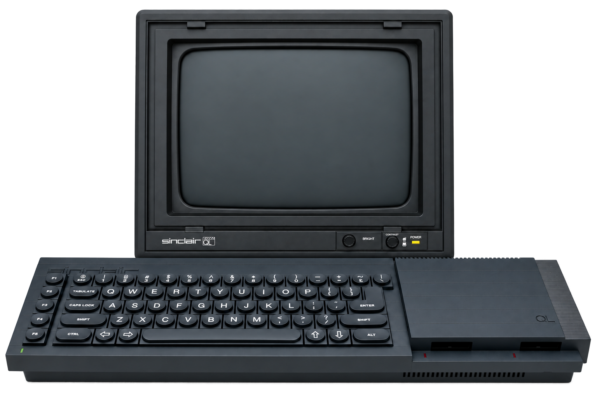

QL Emulator
Base técnica do emulador do Sinclair QL Issue 6.


A iniciar a Minerva 1.98a1 incluída no projeto…
Clique no ecrã para usar o teclado. Backspace (Ctrl+← no QL) apaga à esquerda; Ctrl+→ apaga sob o cursor.
Base técnica do emulador do Sinclair QL Issue 6.

A iniciar a Minerva 1.98a1 incluída no projeto…
Clique no ecrã para usar o teclado. Backspace (Ctrl+← no QL) apaga à esquerda; Ctrl+→ apaga sob o cursor.